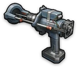

Ключи в ROB RUN: что открывает каждый
В Лути-Бей 14 ключей от сейфов, 13 ключей от комнат и 6 особых ключей и карт к самым ценным комнатам. Ключи находят в городе или берут в бартере у Ленни. Когда подбираешь ключ, его замок отмечается на карте. Пользоваться ключами могут только преступники, так что сначала надень маску.
Обновлено . Игра в раннем доступе и меняется каждую неделю.
Как работают ключи
- Ключи, которые открывают небольшие сейфы и запертые двери, лежат по всему городу. За замками часто хранится ценная добыча.
- Когда подбираешь ключ, его замок отмечается на карте. Что открывает ключ, написано и в его описании.
- Пользоваться ключами могут только преступники.
- За подозрительной дверью в мотеле Ленни идёт бартер: там свои находки меняют на буры, ключи и другие инструменты для ограблений.
Ключи от сейфов
 Все 14 ключей называются «Ключ от сейфа». Какой сейф открывает каждый, написано в описании ключа:
Все 14 ключей называются «Ключ от сейфа». Какой сейф открывает каждый, написано в описании ключа:
| Район | Что открывает |
|---|---|
| Санни-Бич | Открывает сейф в отеле Seasons района Санни-Бич. |
| Санни-Бич | Открывает сейф в отеле Reef района Санни-Бич. |
| Санни-Бич | Открывает сейф в аптеке района Санни-Бич. |
| Санни-Бич | Открывает сейф в кафе на пирсе района Санни-Бич. |
| Санни-Бич | Открывает сейф в минимаркете района Санни-Бич. |
| Санни-Бич | Открывает сейф в магазине электроники района Санни-Бич. |
| Даунтаун | Открывает сейф в минимаркете на севере района Даунтаун. |
| Даунтаун | Открывает сейф в минимаркете в центре района Даунтаун. |
| Даунтаун | Открывает сейф в аптеке района Даунтаун. |
| Даунтаун | Открывает сейф в кафе района Даунтаун. |
| Даунтаун | Открывает сейф на заправке района Даунтаун. |
| Лорейн-Хиллз | Открывает сейф в особняке района Лорейн-Хиллз. |
| Лорейн-Хиллз | Открывает сейф в одном из коттеджей района Лорейн-Хиллз. |
| — | Открывает сейф в стрип-клубе. |
Ключи от комнат
 Все 13 ключей называются «Ключ от комнаты». Какую комнату открывает каждый, написано в описании:
Все 13 ключей называются «Ключ от комнаты». Какую комнату открывает каждый, написано в описании:
| Район | Что открывает |
|---|---|
| Санни-Бич | Открывает запертую комнату в оружейном магазине района Санни-Бич. |
| Санни-Бич | Открывает запертую комнату в магазине экипировки района Санни-Бич. |
| Санни-Бич | Открывает запертую комнату в аптеке района Санни-Бич. |
| Санни-Бич | Открывает запертую комнату в минимаркете района Санни-Бич. |
| Санни-Бич | Открывает запертую комнату в одном из отелей района Санни-Бич. |
| Даунтаун | Открывает запертую комнату в оружейном магазине района Даунтаун. |
| Даунтаун | Открывает запертую комнату в магазине экипировки района Даунтаун. |
| Даунтаун | Открывает левую скрытую комнату на заправке района Даунтаун. |
| Даунтаун | Открывает правую скрытую комнату на заправке района Даунтаун. |
| Даунтаун | Открывает запертую комнату в аптеке района Даунтаун. |
| Даунтаун | Открывает запертую комнату в минимаркете района Даунтаун. |
| Лорейн-Хиллз | Открывает запертую комнату в одном из коттеджей района Лорейн-Хиллз. |
| — | Открывает VIP комнату в стрип-клубе. |
Ключ-карты и особые ключи
 Гранд-отель: тайный склад
Гранд-отель: тайный склад Полицейский участок: запертая комната
Полицейский участок: запертая комната Банк: ID-карта от золотохранилища
Банк: ID-карта от золотохранилищаШесть особых ключей и карт открывают самые ценные комнаты города:
| Район | Что открывает |
|---|---|
| Санни-Бич | Открывает тайный склад гранд-отеля района Санни-Бич. |
| Даунтаун | Открывает золотохранилище в банке. |
| Лорейн-Хиллз | Открывает запертую комнату в одном из коттеджей района Лорейн-Хиллз. |
| Палмсайд | Открывает запертую комнату в полицейском участке. |
| Палмсайд | Открывает комнату арсенала в полицейском участке. |
| Палмсайд | Открывает хранилище в галерее. |
Как добыть бур и ID-карту от золотохранилища
- Отпирай запертые комнаты и взламывай там компьютеры: так заполняется USB-взломщик.
- Полный USB-взломщик обменяй в бартере на бур или продай.
- Хранилище банка вскрывается только буром. Бур работает долго и шумно, а как только он установлен, об этом узнаёт весь Лути-Бей.
- Каждая вскрытая банковская ячейка заполняет Ключи от банковских ячеек. Полные ключи меняют в бартере на ID-карту от золотохранилища или продают.
Отмычки, мастер-ключ и другие инструменты
 ОтмычкаПозволяет вскрывать двери и контейнеры без срабатывания сигнализации или взламывать багажник чужого транспорта.
ОтмычкаПозволяет вскрывать двери и контейнеры без срабатывания сигнализации или взламывать багажник чужого транспорта. Мастер-ключКлюч для доступа к защищенным хранилищам других игроков.
Мастер-ключКлюч для доступа к защищенным хранилищам других игроков. Багажная отмычкаИнструмент для взлома багажника чужого транспорта.
Багажная отмычкаИнструмент для взлома багажника чужого транспорта. БурУстройство для вскрытия банковских хранилищ. Работает долго и шумно.
БурУстройство для вскрытия банковских хранилищ. Работает долго и шумно.
Мини-бурКомпактный и точный. Быстро вскрывает замки сейфов. БолторезМожно использовать, чтобы перерезать кабель подачи электроэнергии в поселении.
БолторезМожно использовать, чтобы перерезать кабель подачи электроэнергии в поселении. USB-взломщикЗаполняется при взломе компьютеров в запертых комнатах. При максимальном заполнении можно обменять в бартере или выгодно продать.
USB-взломщикЗаполняется при взломе компьютеров в запертых комнатах. При максимальном заполнении можно обменять в бартере или выгодно продать. Ключи от банковских ячеекЗаполняется при взломе банковских ячеек. При максимальном заполнении можно обменять в бартере на ID-карту от золотохранилища банка или выгодно продать.
Ключи от банковских ячеекЗаполняется при взломе банковских ячеек. При максимальном заполнении можно обменять в бартере на ID-карту от золотохранилища банка или выгодно продать. Ключи от яхтыДоступ к плавучему дворцу. Мне яхту не угнать, но те, кто могут, отвалят за этот ключ целое состояние.
Ключи от яхтыДоступ к плавучему дворцу. Мне яхту не угнать, но те, кто могут, отвалят за этот ключ целое состояние.
Частые вопросы
Как пользоваться ключом в ROB RUN?
Надень маску: ключами пользуются только преступники. Когда подбираешь ключ, его замок отмечается на карте, а в описании ключа написано, что он открывает.
Где взять ключи?
Ключи находят в городе вместе с другой добычей. Ещё ключи и инструменты дают в бартере за подозрительной дверью в мотеле Ленни.
Что открывает ключ-карта?
Ключ-карта открывает тайный склад Гранд-отеля в Санни-Бич. Другие особые ключи открывают запертую комнату и арсенал полицейского участка, хранилище галереи, золотохранилище банка и комнату в коттедже Лорейн-Хиллз.
Как вскрыть хранилище банка?
Только буром. Его получают в бартере за полный USB-взломщик. Бур работает долго и шумно, и весь Лути-Бей узнаёт, когда он установлен.
Чем отмычка отличается от мастер-ключа?
Отмычка вскрывает двери и контейнеры без сигнализации и чужие багажники. Мастер-ключ открывает защищённые хранилища других игроков: сейфы и стеллажи на их базах.
Ещё по ROB RUN
- Карта Лути-Бей
- Гайд для новичков
- Счёт в банке и отмывка
- Что делать с грузами
- Как стать полицейским
- Калькулятор декодеров
- Гайды
Списки, названия и описания ключей и инструментов, картинки — из файлов игры (24 ноября 2026).